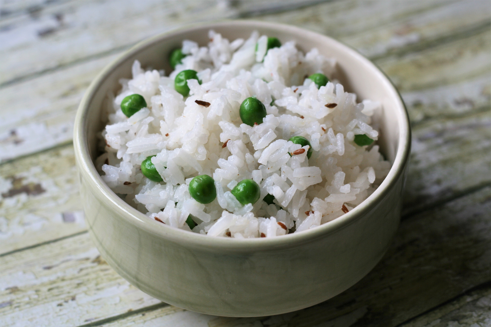

Basmati Rice

Description
Simple basmati rice, like in the restaurants!
This recipe will yield 4 servings.
Ingredients
- 1 3/4 cups of water
- 1 cup of basmati rice
- 1/4 cup frozen green peas
- 1 teaspoon cumin seeds
Directions
- In a saucepan bring water to a boil. Add rice and stir. Reduce heat, cover and simmer for 20 minutes.
- When rice is cooked, stir in peas and cumin. Cover and let stand for 5 minutes.
Source: Allrecipes - Basmati Rice